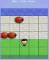
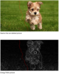
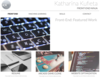
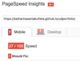
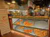

-
 Arcade Game Bugs!Bugs! is a variant of the arcade game Frogger. I practiced my JavaScript skills in this project.
-
 Content Aware Resizing of Images (CARI)I am implementing a web based application for content aware resizing of images. This is a long term project and work is still in progress.
-
 My first portfolio websiteThis was my first front end project. I built a portfolio from scratch, based on a design mockup.
-
 Website Performance OptimizationThis project was all about optimizing your website for speed and achieve a high score on PageSpeed Insights.
-
 Browser Rendering Optimization: Cam's PizzeriaGiven a poorly performing website, I made it run smoothly with 60 Frames per second. Don't burn your eyes!

Katharina Kufieta
Software Engineer